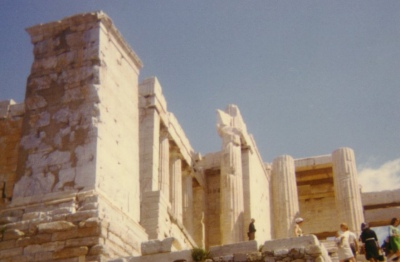

Sacred Texts Classics
Buy this Book at Amazon.com
|

Acropolis, photo by J.B. Hare, © 2008, All Rights Reserved |
Ancilla to the Pre-Socratic Philosophersby Kathleen Freeman[1948] |
This is a translation of nearly every scrap of the writings of the Greek Pre-Socratic Philosophers, from the nearly legendary Orpheus, through Thales, Pythagoras, Heracleitus, Zeno, and Democritus. Included are translations of all known quotations from each writer, names of lost books they wrote, what other authors said about their beliefs, as well as spurious and dubious quotes. Some of the entries, indeed most, are very short, as we only know the names and a bit of biography for some of these figures. This book is a great reference for this topic, and makes fascinating reading.